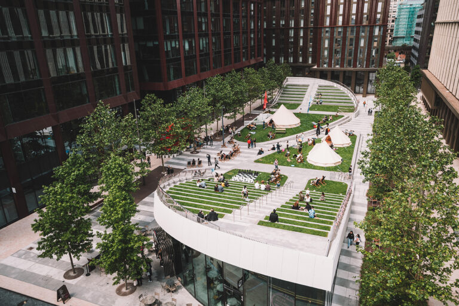
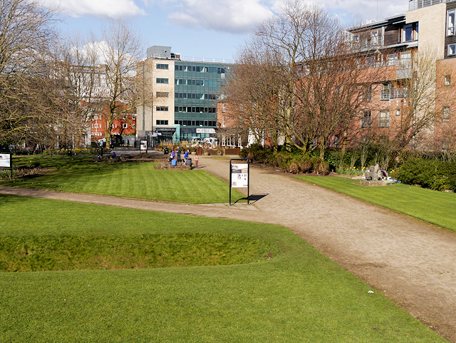
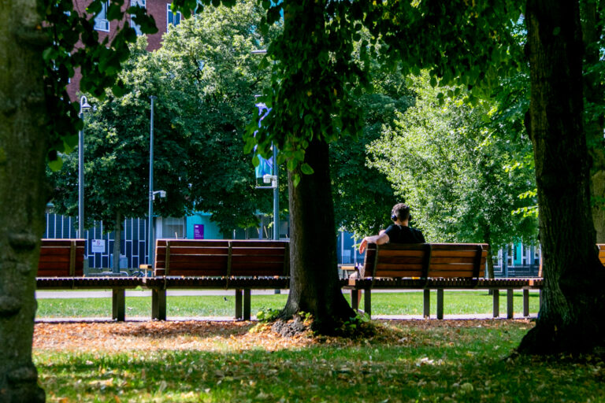
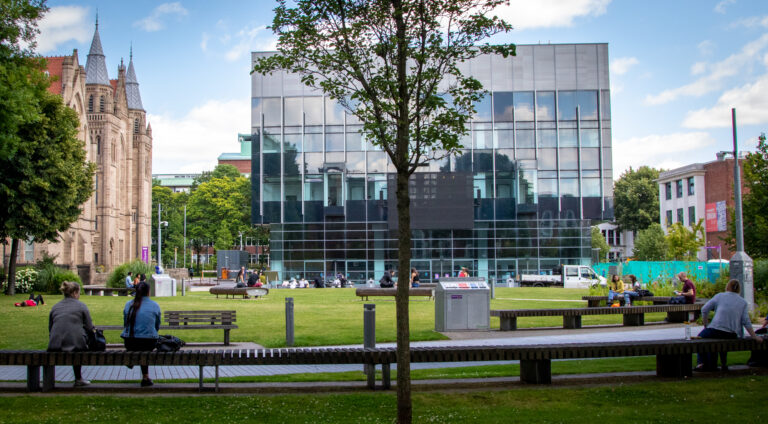

The reason for this websites existence is to help young people between the ages 18 to 25 years old to get out of the house and experience their local green spaces in Manchester. This is because I believe that young people today don't go outside enough and experience the world around them. Hopefully with this website I will be able to persuade people to go outside and venture to their nearby green spaces.
What are the benefits of going outside?
There are mutliple benefits to going outside. The first benefits are physical benefits, the first benefit is lower blood pressure which can prevent heart disease and strokes. It also decreases cholesterol levels which can prevent cardiovascular risks which is also preventing heart disease, strokes and the need to have surgery to fix these issues. There are also mental health benefits, it can help bolster your mood and lower stress levels. Being in green spaces boosts serotonin and dopamine levels which contributes to happiness and reduces feelings of anger, anxiety and frustration.
Different Green Spaces In Manchester.
Symphony Park

Symphony Park is located at Circle Square, it has over a 100 semi-mature trees. It is also home to a cafe and has lots of seating if you were to need to rest your legs. Despite its small size Symphony Park very peaceful and relaxing to be in. The band shown in the images of Symphony Park is Mr Wilsons Second Liners.
Castlefield Urban Heritage Park

Castlefield Urban Heritage Park is a green space near the science and industry museum in Manchester and is an area that is being preserved for people to visit. Castlefield Urban Heritage Park is the first record of human settlement in Manchester made by the Romans. This area is great for walking around and admiring the old structures.
Brunswick Park

Brunswick Park is a small green space located next to Manchester University Law Society and Rutheford Theatre. This green space has patches of grass to sunbathe on and seats to relax in along with multiple trees to sit under. This area is perfect for going for lunch or just simply relaxing in.
Alan Gilbert Square

Located next to Brunswick Park, Alan Gilber Square is a small green space to escape to while having lunch or having a break from lessons, this area can also be used for studying in.